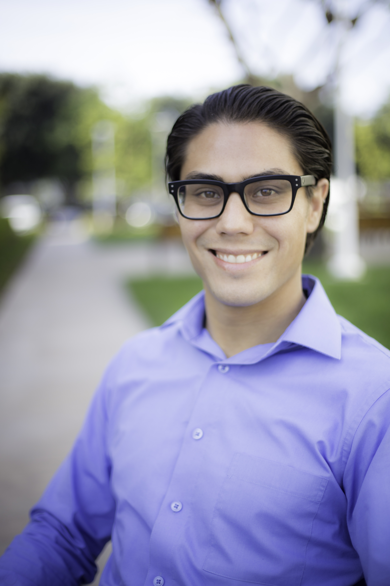

About Me
My name is Michael Osgood and I am a huge science and tech enthusiast. I am a full-stack web developer. Currently, I am enrolled in a full-stack coding program through the University of California Irvine. I also work as a User Acceptance Tester for a cloud-based software company in Irvine, California.
To elaborate on my background, I worked in Public Health for the U.S Air Force. I was stationed at an air base in New Jersey in where I helped protect the local population from environmental threats through preventative measures. This career field spurred my fascination with biology.
After four years in the Air Force, I studied Ecology and Evolutionary Biology at the University of Colorado in Boulder. During that time, I studied a myriad of topics to include evolution, genetics, ecology, chemistry, and physics.
During college, I started working for a software company in Colorado as a support analyst. After graduation, I moved to California and resumed working on the client-facing side of software for a pharmaceutical software company. After 3 years working on the client-facing side of software, I have become a User Acceptance Tester. I work with developers to test and trouble-shoot the software before it goes to production.
In my tenure, I have gained valuable experience from assisting clients on the client-facing side to collaborating with the development team to resolve bugs on the development side. Not only that, I understand how frustrating using poorly-designed software can affect the end-user. This knowledge I accumulated working with software is going to help me become a better developer.
Furthermore, I am gaining crucial knowledge in the development and testing of software through the full-stack coding boot camp. The coursework covers many topics from HTML, CSS, JavaScript, jQuery, React.js, MySQL and many other tools that will help me become a full-stack developer. The experience I have obtained working for tech companies coupled with the knowledge I am acquiring through coding boot camp will help me tremendously as I embark on this path to become a developer.
Connect with Me